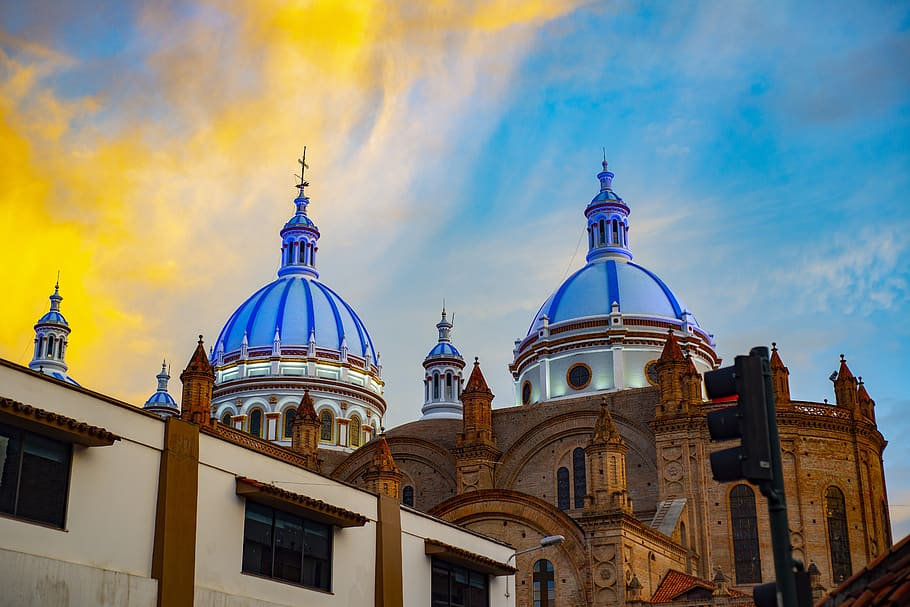

Cuenca (Santa Ana de los Ríos de Cuenca) es una ciudad de las montañas andinas del
sur de Ecuador. Es conocida por la ribera del río Tomebamba y las artesanías, incluidos
los sombreros Panamá. Su plaza central, el Parque Calderón, alberga la Catedral Nueva
con su domo azul y la Catedral Vieja del siglo XVI, que actualmente es un museo
religioso
Su estructura arquitectónica
¿Su Origen?

La mayoría de sus atractivas
construcciones proceden del
siglo XIX. Hay también algunas
edificaciones del siglo XVIII.
Cuenca conserva el estilo de
construcción española. El
Damerismo o estilo Damero, era
el más usado por los europeos
en los tiempos de la conquista y
permitía organizar las nacientes
ciudades de manera rápida y
ordenada. Las calles son
trazadas perpendicularmente
unas con otras, dibujando una
cuadrícula, como en un tablero
de ajedrez.